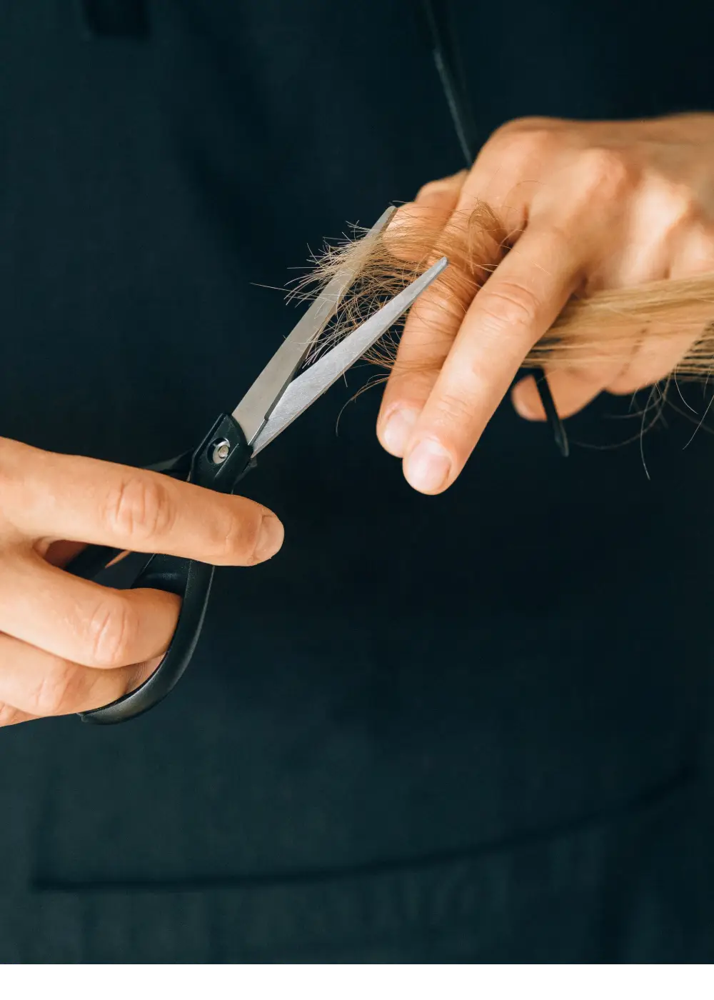

brume
Salon de coiffure — Québec

Brume est un atelier de coupe, de couleur et de soin du cheveu, à Québec. On y travaille à la lame et au peigne, sur rendez-vous, jamais deux têtes en même temps. Chaque coupe part de la matière : sa densité, son épi, la façon dont elle retombe une fois sèche.
Adresse sur demande 000 000-0000 courriel@exemple.ca
Sur rendez-vous
N° 01 — Brume
Site de démonstration — entreprise fictive Vol. I — coupe, couleur, soin